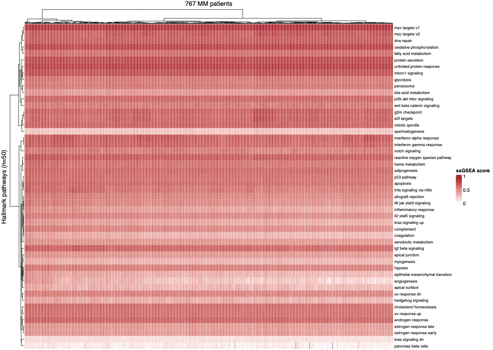
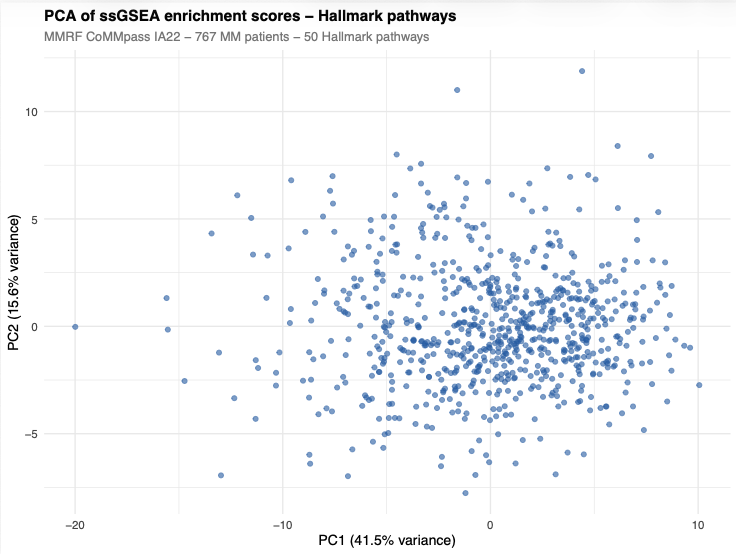
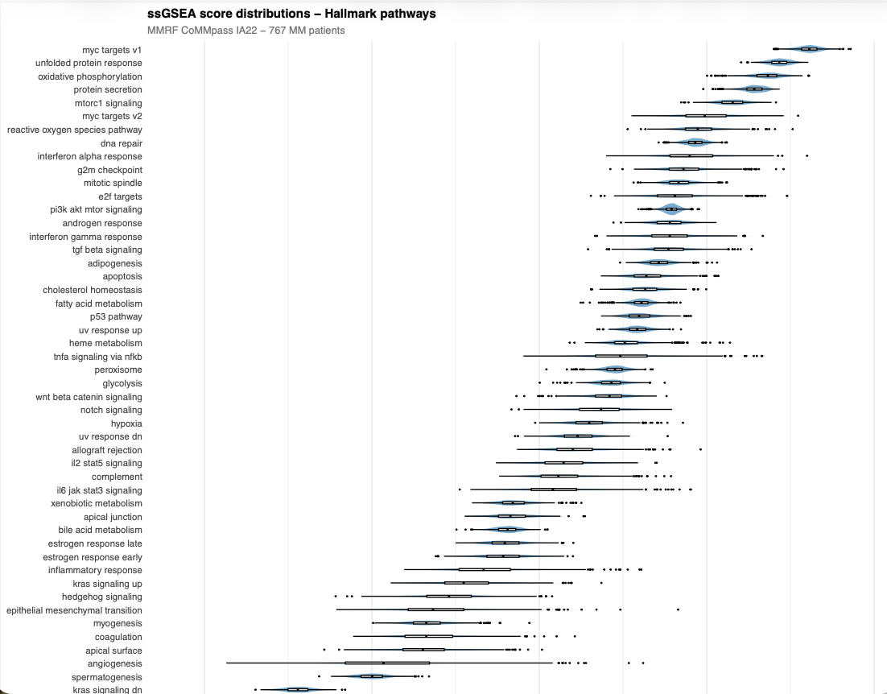
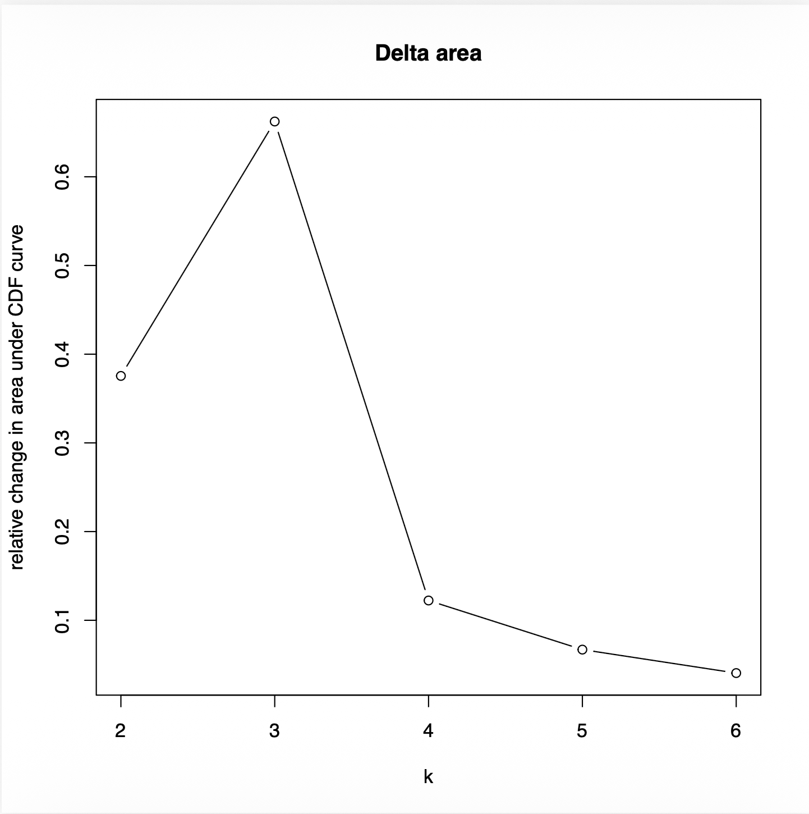
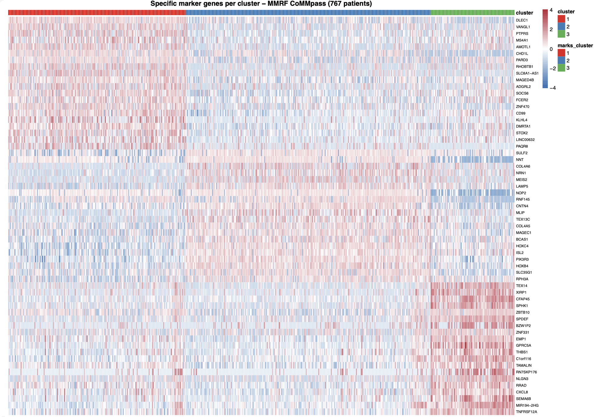

Transcriptomic Analysis of Multiple Myeloma Patients
Internship Practical Assignments in R
By: Enrico Gallus (MSc Bioinformatics Student)
Project Overview
In this project, I completed three assignments to analyze RNA-seq data from 767 patients. The goal was to go from raw data to finding different groups of patients based on their genes.
- Assignment 1: Cleaning the data and filtering samples.
- Assignment 2: Mapping IDs and running ssGSEA pathways.
- Assignment 3: Clustering patients and finding marker genes.
Assignment 1: Data Cleaning
The dataset was the MMRF CoMMpass IA22. I had to filter the columns to keep only the important ones:
- Only therapy cycle 1 (baseline).
- Only Bone Marrow (BM) samples.
- Only CD138+ cells.
I used "grep" to find these samples. Then I transposed the matrix so patients are rows and transcripts are columns. I rounded the numbers to 3 decimal places to save space.
Assignment 2, Gene Mapping and ssGSEA:
The goal of this assignment was to perform an enrichment analysis, so answer to the question: what are the cellular pathways that appear deeply altered (basing on the transcriptomes I have)???
Generally to perform GSEA (gene set enrichment analysis), you would need a "healthy" reference transciptome that was sequenced from the same machine (in order to avoid biases), although I found out that I could avoid this just by performing a ssGSEA
ssGSEA = single sample GSEA
The original data used Ensembl IDs (ENST), but I needed Gene Symbols (like MYC) for the analysis since GSVA (the software that will let me run the ssGSEA can only use such symbols). I used a tool called biomaRt to do this conversion.
Assignment_2_Load_Expression_MatrixHOW? I opened the connection with the specific BioMart connection object and then built a query variable (specific for biomart), by inputting the Ensbl transcipt IDs + some filters:
1- attributes: so what kind of information I was looking for (ensmbl_transcrip_id + its CORRESPONDING hgnc_symbols)
2- filters: so what value the DB algorithm should rely on to search for results (ensmbl_transcrip_id)
3- values: where those values are stored (the actual variable with the list)
4- mart: connection to use
After this I was left with the enriched version of the enst_ids variable which was now storing also the CORRESPONDING hgnc symbols
GSVA requires a numerical matrix (so no tibble) hgnc genes expression x patient, nothing more
Since many transcripts mapped to the same gene and many others didn't find a corrispondence at all:
1- I kept the hgnc_symbols that were different from ""
2- I removed redundancy by keeping for each gene group the transcripts with the highest average expression (i transposed the DF back to the transcript x patient version for later)
3- I got rid of uneeded columns (because GSVA doesn't need mean avrg expression and enst_IDs...)
4- I turned the tibble into a numeric matrix to finally make it fit the format requirements for GSVA
this was it, i saved the RDS file in the directory and started the ssGSEA in the following script break down
Assignment_2_ssGSEA_Execution.RThe bioconductor library I used is called GSVA, I also imported the BiocParallelpackage for CPU core management and msigDBr to load the pathways collection directly into R
The pathways collection I used is called Hallmark, it stores 50 pathways specific for cancer clones analysis (I tried with richer collections but results were bad due to noise from random unrelated pathways)
After loading Hallmark, I turned the pathways DataFrame into a nested list of pathways and corresponding hgnc genes implied in that pathway (called gs_list)
it was used as a parameter for running the ssGSEA, here's all the parameters:
1- exprData: the numerical matrix of genes x patient
2- geneSets: the nested list we've just mentioned above (gs_list)
3- normalize = True: to normalize the data and make it meaningfull
4- minSize and maxSize: min and max number of genes for pathway
In order to better optimize my computational resources I split the workload over max cores - 1 (I kept one free to avoid my laptop going into coma)
Everything was ready so I ran the ssGSEA:
1- following the parameters defined above
2- using the computational resources specified above
I then saved the output both as a RDS and CSV file
Assignment_2_downstream_analysis.R
Now that I had the scores from the ssGSEA, I needed to visualize them to see what biological patterns were hiding in the data. I used visual libraries like ComplexHeatmap and ggplot2.
HOW? Here are the visualization steps:
1- I loaded the ssGSEA scores matrix I just created (50 pathways x 767 patients).
2- I ranked all the pathways using MAD (Median Absolute Deviation). This helps find the pathways that vary the most across all the patients. I also cleaned up the pathway names (removing "HALLMARK_" and making them lowercase) so the graphs would look better.
3- The Heatmap: I created a big heatmap using a blue-to-red color scale. Blue meant low activity and red meant high activity. I clustered both the rows and columns so similar patients and pathways would group together visually.
4- Violin Plots: I reshaped my data and used ggplot2 to draw violin and box plots for all 50 pathways. This was to see the spread of scores and if some pathways were consistently active or very heterogeneous.
5- PCA (Principal Component Analysis): Finally, I ran a PCA on the scores to compress the data into two dimensions (PC1 and PC2). This plotted all the patients as dots to see if they form distinct, separate subgroups based on their pathway activity. I saved all these plots as PDFs.

Interpretation: Hallmark Pathways Heatmap
Heatmap of 50 Hallmark Pathways. This graph shows the enrichment scores for all 767 patients across the 50 biological pathways from the MSigDB Hallmark collection. The enrichment score (or ES) is a single numerical value that represents the degree to which a specific group of genes (pathway) is active in a single patient.
I used a color scale where deep red means high pathway activity (the pathway is "turned on") and deep blue means low activity or suppression (the pathway is "turned off"). The graph is mainly red.
Why is the graph mainly red? Well, as we said, Hallmark is a specific collection of known-to-be-involved-in-cancer pathways, what would you expect from 767 samples of patients with Multiple Myeloma? This is basically proving that there is a Cancer Signature Bias: the cancer-driving pathways are turned on across the board.
The most important thing to see here is how the rows (pathways) and columns (patients) are rearranged. Since I turned on clustering, the computer did an unsupervised hierarchical clustering. So the heatmap is forcing similar patients to stand next to each other and similar biological processes to group together into "blocks."
Reading the row blocks from top to bottom. The clustering has organized the 50 pathways into meaningful biological groups. At the very top there is a dense plasma cell identity block: myc targets v1, myc targets v2, oxidative phosphorylation, protein secretion, unfolded protein response, and mtorc1 signaling all cluster together and are uniformly red for almost every patient. Why? These are the core programs that define what a plasma cell is. They are not really distinguishing patients from each other; they are the shared biological background of the entire cohort.
Just below that we have a proliferation block: g2m checkpoint, e2f targets, and mitotic spindle group together. These pathways control cell cycle progression and DNA replication. These show more variation across patients, some columns are bright red here while others are pale, meaning some patients have highly proliferative tumors while others do not. This is clinically relevant: high proliferation in MM is associated with more aggressive disease.
Overall, this heatmap proves that Multiple Myeloma is not just one disease but it is a collection of different biological mechanisms acting with different intensities in different patients.

Interpretation: PCA of Hallmark Pathway Scores
What is PCA doing here? At this point I had a matrix of 50 numbers per patient (one ssGSEA score per Hallmark pathway). PCA (Principal Component Analysis) compresses those 50 dimensions into just 2 underlying dimensions, called PC1 and PC2 (Prof. Bovo asked me about it), while trying to preserve as much of the original variation as possible. Each dot in this scatter plot is one of the 767 MM patients, and its position is determined entirely by their pathway activity profile.
What do the axes mean? PC1 captures 41.5% of the total variance in the data, and PC2 captures another 15.6%. Together they summarize 57.1% of all the biological variation across 50 pathways in just two numbers per patient.
What does the plot show? All the dots are spread primarily close to PC1, which makes sense since it summarizes a lot of variance. There is no clean separation into tight isolated groups but the patients form a continuous distribution with some outliers stretching the "cloud". This means that MM in this cohort is not a disease with just a few molecular subtypes that are perfectly separated but we have patients transitioning differently between different pathway activation states.
The outliers matter. The patients sitting far from the main cloud, particularly those with extreme PC2 values might have very unusual pathway activity profiles. These could correspond to rare cytogenetic subtypes or high-risk patients with a very distinct transcriptional program.
Overall, the PCA confirms whatwe said in the heathmap section: there is s biological structure in this cohort worth investigating, but it requires a solid clustering method (spoiler: Consensus Clustering) rather than just inspecting this graph visually.
[

Interpretation: Hallmark Pathway Score Distributions
What is this plot showing? Each horizontal blue shape is a violin plot for the 50 Hallmark pathways, representing how ssGSEA scores are distributed for all 767 patients for that pathway. The wider the violin at a given score is, the more patients have that score (range). The small white box inside each violin is a boxplot with the median and interquartile range. Pathways are ordered from bottom to top by their median score, so the most consistently active pathways are the ones at the top.
The top of the chart, plasma cell identity pathways. The pathways with the highest median scores are myc targets v1, unfolded protein response, oxidative phosphorylation, protein secretion, and mtorc1 signaling. This is not a coincidence, we've mentioned some of them above and these are exactly the hallmarks of normal plasma cell biology. The fact that these score highest across the entire cohort tells me the signal is dominated by the cell type identity (CD138+ plasma cells).
The bottom of the chart, irrelevant biology. At the very bottom sit pathways like pancreas beta cells, spermatogenesis, and angiogenesis. These score near zero across essentially all patients, which makes complete sense, we are looking at bone marrow plasma cells, so we would not expect pancreatic or reproductive tissue programs to be active. This is actually a good internal quality control: if these had scored high, something would have gone wrong in the pipeline.
The most interesting pathways are the heterogeneous ones. Pathways like interferon alpha response, inflammatory response, and androgen response show wide, irregular violin shapes, meaning some patients score very high while others score very low. This heterogeneity reflects the fact that not all MM patients have the same microenvironment or hormonal signaling activity. These are the pathways that will likely drive the separation between clusters.
Overall, this plot confirms two things at once: the pipeline is working correctly (irrelevant pathways score low, plasma cell pathways score high), and there is genuine patient-to-patient variation in cancer-relevant pathways that is worth clustering.
Assignment 3: Patient Clustering
The main reason of this analysis was to answer to the question :"Do patient fall into dinstinct molecular sub-groups based on their gene expression?". To achieve this I needed the gene(hgnc_symbols) x patients matrix from assignment_2 first script. The full matrix counts around 39.000 transcripts, way too many, expecially taking into account the fact that the majority of these are not implied at all in any cancerogenic activity. To avoid dealing with such noise it was clear that I had to normalize and build an informative gene set.
1- I applied the MAD function, like I did for the violin plot, besides this time by focusing all transcript average expression
2- I ordered the transcripts by MAD (decreasing order)
3- I took those 5000 hgnc genes and built a new matrix from it
There it comes the normalization, data must be normalized to avoid richly expressed genes pulling the attention to themselves We're going to apply the Z-Score normalization, it turns the question from which genes are most expressed? to which genes are most different from the average?. Z-score = (score-mean)/standard deviation (for a whole column). The scale function does that all at once but however it can only work with columnar values:
1- transpose the expr_top5000 matrix
2- let scale do its calculations
3- transpose tha matrix back to genes to patients
Consensus Clustering
(Since I never covered this here's my notes)
Why does Consensus Clustering exists?: when clustering with hierarchical clustering the resulting clusters (k) are just artifacts, this means that adding new sequences or modifying some of the ones that you have could make many sequences shift cluster just because they were sitting right along the border between two different clusters. This is what consensus clustering prevents.
How is it useful?: It allows clustering patients reflecting a genuine biological subgroup, answering to the question: which patients robustly belong together across many different views of the data?
How does it work?: It's a sort of iterative grouping algorithm, it takes a random subsample of patients (80% for me) for a fixed number of rounds (100 for me) and tries grouping them together basing on the similarity of their transcriptomic profiles. Every round, it records which patients ended up in the same group. After all 100 rounds, for every possible pair of patients it asks: "out of all the iterations where both of these patients were included, how many times were they together?" This frequency becomes their consensus score, a number between 0 (never together) and 1 (always together). Patients that are robustly similar will score close to 1 regardless of which random subsample was used, while patients sitting on the boundary between groups will score around 0.5.
What do we get?: ConsensusClusterPlus will iteratively group all patiens with the specified K groups and, after all 100 rounds, will produce a CDL plot. From this we'll need the Delta Area to decide which K group number returned better clusters.

Once done so I started bulding the heathmap. To do so I used the pheathmap package and settled all the parameters to make the resulting heathmap pretty and readable.
So I manually ordered the patients by cluster assignment, and then explicitly told pheatmap not to re-cluster the columns, this way the three patient blocks stay visible and separated. The rows (genes) were still free to cluster, which is what reveals the gene expression blocks that characterize each patient group.
I also added a color annotation bar on top of the heatmap using RColorBrewer, so each patient column is color-coded by their cluster membership (red = Cluster 1, blue = Cluster 2, green = Cluster 3). The expression color scale goes from deep blue (low expression) to deep red (high expression), same as the heatmap in Assignment 2.
The result is a 5000 genes x 767 patients heatmap where you can clearly see three distinct patient blocks with their own gene expression programs, swhich is exactly the visual confirmation that k=3 was the right choice.
Below you can see the resulting clusters heathmap

Interpretation: k=3 Consensus Cluster Heatmap (5000 genes x 767 patients)
What is that? That heatmap shows the z-scored expression of the top 5000 most variable genes across all 767 patients. The expression color scale goes from deep blue (z-score = -3, well below average) to deep red (z-score = +3, well above average). Importantly, because these are z-scores and not raw expression values, blue does not mean a gene is off but it means that patient is expressing that gene way below the average. This is why the heatmap looks more balanced between red and blue compared to the Hallmark heatmap in Assignment 2, where everything was pushed red by the cancer signature bias.
The dendrogram on the left? The dendrogram on the left side groups genes that behave similarly across patients. You can see several major horizontal gene blocks emerging from it, groups of hundreds of genes that go up and down together across the three clusters. These blocks are what define the biological footprint of each cluster.
Cluster 1, the high expression cluster. The red block on the left (269 patients) is the "reddest" of the three. This doesn't mean they are the sickest or the most aggressive but it means their tumor cells have a transcriptional program that is generally more active across the most variable genes in the dataset.
Cluster 2, the average cluster. The blue block in the middle (371 patients, the largest group) is dominated by pale white and light tones across most gene blocks. This cluster sits closest to the cohort mean so its patients that are not extreme in either direction for most genes. This is biologically common in cancer cohorts: the largest subgroup is often the most "typical" one, while the smaller clusters capture the more extreme biological subtypes.
Cluster 3, the most distinct cluster. The green block on the right (127 patients) is the most visually striking. There are clear gene blocks where Cluster 3 is strongly blue while Clusters 1 and 2 are red which means these genes are specifically suppressed. There are also areas in the lower portion of the heatmap where Cluster 3 switches to red while the others are pale, genes uniquely upregulated in this group. This double pattern of specific suppressions and specific activations is what makes Cluster 3 the most transcriptionally distinct subgroup, and (SPOILER ALEERT) it explains why it produced the most marker genes (407) in the downstream limma analysis.
Now that I had the three patient clusters done, the next question was: which genes are actually responsible for making each cluster distinct? These are called marker genes so genes that are specifically upregulated in one cluster and not in the others. To find them I used limma, a Bioconductor package.
Before running limma I applied a log2(x+1) transformation to the raw expression matrix with hgnc symbols from assignment 2. Limma expects data in log scale so the relationship between expression and variance becomes more linear and the statistically meaningful. This because variance becomes more stable across the expression (min-max) range, preventing extremely high values to dominate.
I also had to make sure the patient order in the expression matrix matched EXACTLY the order in the cluster assignment because a single patient being out of order would silently assign wrong cluster labels to hundreds of patients and ruin everything (and it took me two hours to realize this).
One-vs-Rest Strategy
For each of the three clusters I ran a separate one-vs-rest comparison: Cluster 1 vs (Cluster 2 + Cluster 3), then Cluster 2 vs the others, then Cluster 3 vs the others. The point of this was that each comparison would produce a ranked list of genes with their logFC and an adjusted p-value reflecting how more/less expressed compared to the other clusters.
The core limma workflow for each comparison is three lines:
1. lmFit: for each gene it estimates how much does expression differ between cluster and rest
2. eBayes: applies empirical Bayes moderation, it is needed to make per-gene variance estimates of smaller groups
(k = 3) less noisy.
3. topTable: extracts the ranked results table with logFC, p-values, and B-statistics
Specificity Filter
Finding genes upregulated in one cluster is not enough, a gene might be upregulated in both Cluster 1 AND Cluster 2, which makes it useless as a marker for either. To find true markers it was needed to add specificity filters, so genes qualify only if they pass both of these conditions:
1. It is significantly upregulated in its cluster: logFC > 1.5 and adjusted p-value < 0.05
2. It is upregulated in exactly one cluster and not in any other
This two-step filter is what separated genuine cluster-specific markers from generic
upregulation that happens to be significant. This filtering step yielded 985 elegible genes:
Cluster 1: 279 specific marker genes
Cluster 2: 299 specific marker genes
Cluster 3: 407 specific marker genes
Cluster 3 having the most markers was consistent with what we saw in the heatmap, by that time it already looked like the most transcriptionally distinct group, so it has the most genes that are uniquely and specifically characteristic of it.
Finally I built a focused heatmap showing the top 20 marker genes per cluster (60 genes total) across all 767 patients which is a much more readable than the 5000-gene heatmap. Each row is a gene that was specifically selected because it defines one of the three groups. The rows are annotated on the left with which cluster they belong to, and patients are again ordered and annotated by cluster on top. Row scaling (z-score per gene) is applied directly inside pheatmap via scale = "row" so the color patterns reflect relative expression rather than absolute levels.

Interpretation: Top 20 Marker Genes per Cluster
What is this? This heatmap shows 60 genes, the top 20 most specifically upregulated markers for each of the three clusters, across all 767 patients. Every single row here was "hand-selected" by limma for looking like a feasible cluster-specific marker. The color annotation bar on the right tells you which cluster each gene belongs to, and the bar on top shows the patient cluster assignments as before.
What a good marker heatmap looks like. The expected pattern, and what you should see here, is a clean block diagonal structure: the red-annotated genes on the left should be bright red specifically in the Cluster 1 patient block and pale or blue everywhere else. The blue-annotated genes should light up only in Cluster 2. The green-annotated genes only in Cluster 3. The cleaner and sharper these blocks are, the more robust and biologically meaningful the clustering is.
Cluster 3 markers are the most satisfying ones Consistent with having 407 specific markers, the most of the three groups while counting only 127 patients, the Cluster 3 gene block shows the most intense contrast: genes that are strongly red in the green patient block are suppressed everywhere else. This confirms that Cluster 3 has the most distinct transcriptional identity in the cohort.
Overall, this heatmap is the final deliverable of the entire pipeline: starting from raw transcript-level RNA-seq data, we went through ID mapping, pathway enrichment, unsupervised clustering, and differential expression to arrive at a concrete list of genes that molecularly define each patient subgroup in Multiple Myeloma.